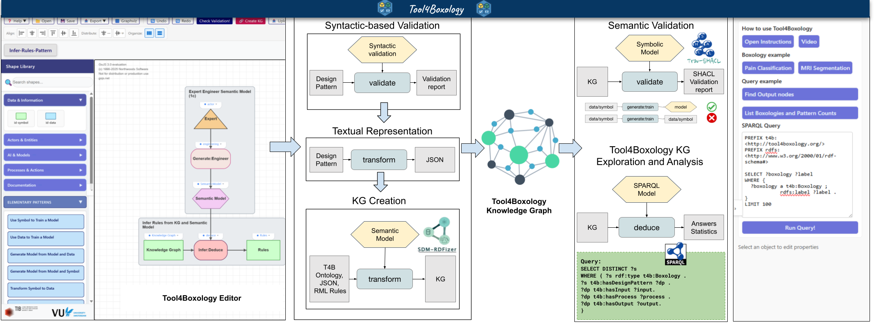

The pipeline is hidden behind clear actions.
Most users only need to draw, validate, create KG, and query. The architecture keeps those actions connected to reliable transformations.
The Tool4Boxology architecture connects the visual editor, syntactic validation, JSON transformation, knowledge graph generation, semantic validation, SPARQL querying, and visual exploration.

Most users only need to draw, validate, create KG, and query. The architecture keeps those actions connected to reliable transformations.
JSON, RDF/Turtle, DOT, PNG, SPARQL results, and generated documentation make the system easier to test and integrate.
Design patterns are not flattened into pictures. Their typed components and relationships remain available for graph analysis.
Start with the online editor, then validate, create KG, and open the SPARQL panel.
The element guide is the shortest reference for choosing the right shape type.